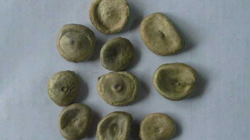

番木鳖碱：运动能量之源，炫酷活力补给
中毒的马拉松运动员，致死的树木，性兴奋剂，险恶的啤酒酿造商，印度举重选手
- 因为力量强劲，从中世纪以来，番木鳖碱就被特别残忍地用作一种特殊用途：毒杀老鼠、猫、狗以及其他不被需要的生物。甘氨酸是将神经信号传递到肌肉的化学物质，通过阻隔甘氨酸的运作，高剂量的番木鳖碱能引发极严重而痛苦的肌肉痉挛。如果不加遏制，这种痉挛的频率和强度会增加，几个小时之内就能令受害者死于窒息或因剧烈抽搐而产生的严重虚脱。简言之，这个东西就是奥运会马拉松比赛中的提神水，或者被用作一个忙着准备考试的学生的强效功能性饮料。
- 番木鳖碱自然存在于马前子（又名番木鳖树）的种子当中，这是一种原产于印度和南亚地区的落叶乔木。树木高度适中，大约能长到40英尺高，看起来纯良无害，很像是长得过大的梨树。花朵有一种非常不好闻的味道，结球果，白色的浆汁中包有5粒种子。马前子的每一个部分都有毒。甚至是树上附生的植物，也吸收了惊人的毒性。
- 1818年，番木鳖碱首次从种子中被提取出来。法国医生进行了一系列积极的实验，研究纯番木鳖碱作为药物的效用如何。结果并不是太好。番木鳖碱的常规剂量为1—3毫克。不过，科学家们很快就发现，只需要5毫克的番木鳖碱就能令人致死。番木鳖碱极易被过量使用。事实是，很多医生真的使用过量了。
- 20世纪60年代，总部在迈阿密的All Products Unlimited公司偶然发现了昔日维多利亚时代番木鳖碱作为性刺激物的鼎鼎大名。为了抓住当时兴起的性革命的良机，他们在1966年推出了一种叫“宝石”的春药。广告中尴尬地声称该药是“给已婚男女的纯天然助兴提神药”，每颗“宝石”中都包含了小剂量的番木鳖碱。这家公司很快就被告上法庭，罪名是邮件诈骗。该项罪名并不是因为“宝石”的成分表中包含了番木鳖碱，而是因为其夸张地描述了服用“宝石”之后在性能力方面的提升。公司没有费力地去打官司，很快就被定罪。
- 在19世纪，酒馆老板以进价销售啤酒。那么，他是如何获利的呢？好吧，往里面兑水。当然，这样一来他就没有办法留住客人。有没有办法能在给啤酒兑水的同时保证口感不变呢？加入番木鳖碱。这种神奇的药粉溶于水，能够增加因啤酒花产生的苦味，产生一种接近于纯啤酒的醉人感受。换句话说，贪婪的酒馆老板们急于牟利。而在19世纪，英国有不少酗酒者死于非传统意义上的醉酒。